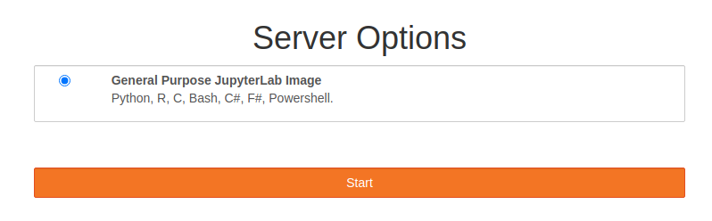

Bash Scripting
JupyterHub
-
Navigate to JupyterHub
- an online environment where you can code and explore the Shell.
-
Login to JupyterHub using your CCCU user account credentials.
-
Start your server... 
-
Open shell environment and
cdtoNOS,$ cd ~/NOS
-
Make new directory,
$ mkdir scripting
Task 1. #! Shebang/hashbang
- Create a new file called
script.sh$ touch script.sh
- Then edit the file
$ nano script.sh
- Reproduce the following...
#! /usr/bin/env cat VAR1=Hello VAR2=World! VAR3=Goodbye echo ${VAR1} ${VAR2} echo ${VAR3} ${VAR2} - Write out
ctrl+x - Modify the file's mode bits so that it becomes an executable
$ ls -l $ chomd +x script.sh $ ls -l-
performing
ls -leither side of thechmodcommand shows the information about the file such as its mode bits.- Before:
-rw-r--r-- 1 jovyan users 107 Feb 22 12:35 script.sh - After:
-rwxr-xr-x 1 jovyan users 107 Feb 22 12:35 script.sh
- Before:
-
- Now you are going to run the script two ways.
- first way is to call the script via bash directly:
$ bash script.sh- Ouput:
Hello World! Goodbye World!
- Ouput:
- Second way is to run the script as an executable
./script.sh- Ouput:
#! /usr/bin/env cat VAR1=Hello VAR2=World! VAR3=Goodbye echo ${VAR1} ${VAR2} echo ${VAR3} ${VAR2}
- first way is to call the script via bash directly:
- Lets modifiy the script so that the
#! /usr/bin/env wc-
write out
ctrl+x -
What will running the script do?
-
Run it and find out.
Answer
$ ./script.sh 12 97 ./script.sh
-
So you can see that the #! is only operated on when the script is run as an executable, where as using bash command we are calling the interpreter directly and it ignores the #!.
Task 2. Variables
- create a new file and call it
int-or-string.sh - Reproduce the following:
#! /usr/bin/env bash A=2334 # Integer... though still a string A=$(( ${A} + 1 )) # increment A by 1. echo "A = ${A} " # a = 2335 echo # Integer, still. - You can change the mode bits again if you like or run with just
bash.bash int-or-string.sh- or
chmod +x int-or-string.sh,./int-or-string.sh - Output:
A = 2334 A = 2335
- This behaved as expected, using arthemtric expansion
$((...))to increment variableAby 1.
- Modify the script to include, pay attention to the comments.
B=${A/23/BB} # Substitute "BB" for "23". # This transforms $b into a string. echo "B = ${B}" # B = BB35 declare -i B # Declaring it an integer doesn't help. echo "B = ${b}" # B = BB35 B=$(( ${B} + 1 )) # BB35 + 1 echo "B = $B" # B = 1 echo # Bash sets the "integer value" of a string to 0. C=BB34 echo "C = $C" # C = BB34 D=${C/BB/23} # Substitute "23" for "BB". # This makes $D an integer. echo "D = ${D}" # D = 2334 D=$(( ${D} + 1 )) # 2334 + 1 echo "D = ${D}" # D = 2335 echo- Output:
A = 2334 A = 2335 B = BB35 B = BB35 B = 1 C = BB34 D = 2334 D = 2335 - Still on Variables... create a new script called
my-name-is.sh- reproduce the following code, like from the lecture slide.
#! /usr/bin/env bash GREETING=Hi STATEMENT="my name is," INTERROGATIVEPRONOUN1=what? INTERROGATIVEPRONOUN2=who? NAME=${1:-"Slim Shady"} ALLITERATION=chka-chka echo ${STATEMENT} ${INTERROGATIVEPRONOUN1} echo ${STATEMENT} ${INTERROGATIVEPRONOUN2} echo ${STATEMENT} ${ALLITERATION} ${NAME} - again note the Uppercase standard for nameing convention here.
- Notice how not all variables values are explicitly declared as string
"". You only need to do this if there are spaces between letters/words. - run the command.
$ bash my-name-is.sh - Output:
my name is, what? my name is, who? my name is, chka-chka Slim Shady - But hold on... what about
NAME=${1:-"Slim Shady"}- Well this special operation allows default values to be assigned to the variable if something is
nullsuch as1is the positional number for a parameter coming into the script when it is called from the CLIm if this isnullthen setNAME=Slim Shady.
- Well this special operation allows default values to be assigned to the variable if something is
- Try calling the script but this time provide your first name, or mulitple names encapsulated with
"name name name"$ bash my-name-is.sh Seb - Output:
my name is, what? my name is, who? my name is, chka-chka Seb
- reproduce the following code, like from the lecture slide.
Task 3. Special parameters and conditions
So now you are going to understand in more detail how parameters work.
- Create a new script called
parameters.sh - edit the script to look like this:
#! /usr/bin/env bash while getopts u:a:f: flag do case "${flag}" in u) username=${OPTARG};; a) age=${OPTARG};; f) fullname=${OPTARG};; esac done echo "Username: $username" echo "Age: $age" echo "Full Name: $fullname"-
Run the script by only supplying your username, age and full name.
-
What happened?
Answer
bash parameters.sh sb1501 nonyabusiness "Seb Blair" Username: echo Age: echo Full Name: -
Try again this time provide your a
-uthen the username.Answer
bash parameters.sh -u sb1501 nonyabusiness "Seb Blair" Username: sb1501 echo Age: echo Full Name: -
Repeat but provide all options
-u,-a, and-fAnswer
bash parameters.sh -u sb1501 -a nonyabusiness -f "Seb Blair" Username: sb1501 echo Age: nonyabusiness echo Full Name: Seb Blair
-
- Modify the code again, so that parameters can be precheck before coming to
getopts#! /usr/bin/env bash if [[ $# -gt 6 ]];then echo -e "Too many arguments supplied:\n$#" exit 1 elif [[ $# == 0 ]]; echo -e "Not enough arguments supplied:\n$#" exit 1 fi while getopts u:a:f: flag do case "${flag}" in u) username=${OPTARG};; a) age=${OPTARG};; f) fullname=${OPTARG};; esac done echo "Username: $username" "Age: $age" "Full Name: $fullname"
-
Try to run the script with no parameters, what happens?
-
Try to run the script with more than 6 parameters, what happens?
-
What about providing a flag that is not accounted for?
bash parameters.sh -U sb1501 -a nonyabusiness -f "Seb Blair"Answer
-
$ bash parameters.sh -U sb1501 -a nonyabusiness -f "Seb Blair"
parameters.sh: illegal option -- U
Username: Age: Full Name:
```
So you see that the `getopts` deals with illegal options.
Out of curosity, what happens if you change your parameters orders..?
</details>
Task 4. Reading from stdin
Here you are replicating what was in the lecture using the read command to caputer user input.
- create a new script called
userinput.sh - reproduce the following code, pay attention to the comments:
#! /usr/bin/env bash
echo -n "Enter your name:"
read NAME # stores user's input
echo "Your name is:" ${NAME} # prints user's input
# prompt with and stores user's input
read -p "Enter your name: " NAME
echo Your name is ${NAME}.
# prompt with suppressed feature enable so user input is hidden
read -t 5 -p "Enter your password: "$'\n' -s PASSWORD
echo ${PASSWORD} # though it is stored as plain text here...
read -a WORDS <<< "Hello world!" # stores an array '-a`
echo ${WORDS[0]} # accessing the arrays indicies
echo ${WORDS[1]}
echo ${WORDS[@]} # access the entire array
echo ${#WORDS[1]} # get length of the index
echo ${#WORDS[@]} # get lenght of array
Task 5. Loops
-
Create a new script called
forloops.sh -
Reproduce the following code, pay attention to the comments.
#! /usr/bin/env bash DIR="task5" # if directory (-d) does not exist (!), then create it if [[ ! -d ${DIR} ]]; then mkdir ${DIR} && echo "${DIR} created" # if successful printout created fi # a becomes 1 then 2, and 3 and this is appended to the word foo_ to # create files in the directory that was created. for a in 1 2 3 ; do touch ${DIR}/foo_$a done -
Run this command, and see if you get a new directory filled with files.
-
You can check by running the ls & wc -l command in terminal:
$ ls task5/ | wc -l -
Lets modify the script again
#! /usr/bin/env bash DIR="task5" # if directory (-d) does not exist (!), then create it if [[ ! -d ${DIR} ]]; then mkdir ${DIR} && echo "${DIR} created" # if successful printout created fi # counts the number of files in the directory # you can run commands and save the outputs to variables using $(...) COUNT=$( ls ${DIR} | wc -l ) # arthimetic operations can be formed using $((...)) BOUND=$(( ${COUNT}+5 )) # using the seq command you can create sequence from one number to # another... seq a b, 1 to 10 for example. # this way we can create a new file proceeding the last file in the dir for a in $( seq ${COUNT} ${BOUND} ) ; do touch ${DIR}/foo_$a done -
Run the command and perform the command
ls task5/ | wc -lto see if the files have been created. Rinse and repeat a few times to see if it works. -
Now create a
whileloop.shfile#! /usr/bin/env bash COUNTER=1 while [ ${COUNTER} -lt 10 ] do echo ${COUNTER} COUNTER=$(( ${COUNTER}+1 )) done echo All done until [ ${COUNTER} -eq 0 ] do echo ${COUNTER} COUNTER=$((${COUNTER}-1)) done echo All done
- Run this and see the output in the terminal,
- experiment with:
-ltless than-leless than equal to-eqequal to-gegreater than equal to-gtgreater than
- experiment with: